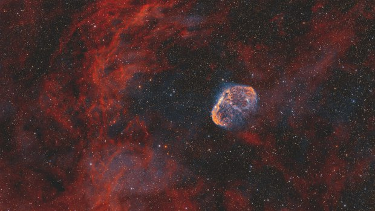
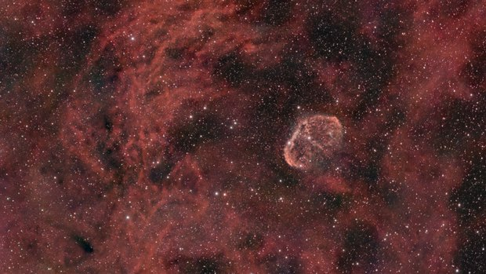

Stretched image
Narrowband palette tool
False colours for a dual-band stack (Hα and OIII): COSMO Fire & Ice, HOO and SHO, chosen on a contact sheet.
How to use it
- Add the tool from Tools, on a stretched image. Its place is on the nebula layer, after Separate stars: the stars then keep their own colours.
- Press Contact sheet: the three palettes are shown on the image, side by side. Click one: nine variations follow, with less or more OIII and redder or yellower warm tones, in finer steps at each click.
- Click the middle one to keep it and close the sheet, then press Apply.
Whole image / Detail: the thumbnails show the whole frame, or the part of the image where Hα and OIII are both strong, where the palettes differ the most.
Settings
- Contact sheet
- All the palettes on the image, side by side; then variations around the one chosen.
- Palette
- COSMO Fire & Ice (default): OIII blue, Hα red, then orange and yellow as it brightens, pale where both lines meet; where both are bright OIII counts less, so no flat white. HOO: Hα red, OIII cyan. SHO: the Hubble palette, its sulfur made from Hα.
- Protect the sky
- Takes the faint OIII out of the background: raising OIII then colours the nebula without turning the sky into blue patches. Too far, the faint edges of the nebula lose their blue too.
- OIII
- How bright OIII is next to Hα. In the middle, both are at the same level; to the right OIII is up to four times brighter, to the left up to four times fainter.
- Warm tones
- Turns the warm colours (gold, orange, red) by up to 40°: to the right towards yellow, to the left towards red. Blues and teals do not move. In COSMO Fire & Ice: more or less of the yellow that bright Hα brings.
- White where they meet
- COSMO Fire & Ice only: how white Hα and OIII turn where they meet. At 0 the two colours only add up.
- Pale blue
- COSMO Fire & Ice only: to the right a paler, more cyan blue for OIII; to the left a deeper one.
- Sulfur
- Palettes with sulfur only: how much sulfur is made, as a share of Hα.
- Sulfur away from OIII
- How much less sulfur there is where OIII dominates. At 0, the sulfur follows Hα everywhere.
- Amount
- The palette blended with the image as it was: 100 % is the palette alone.
When to use it
On a stack taken through a dual-band filter, such as the LP filter of a Seestar. Such a filter records no SII: the palettes that use sulfur make one from Hα, stronger where there is less OIII. It is a rendering, not a measurement.
Image
Works only on a stretched image.
Example


withoutCOSMO Fire & Ice